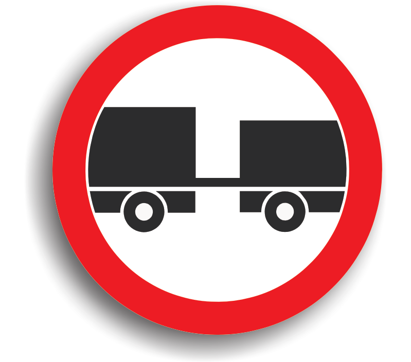

Indicatoare de interzicere sau restrictie



vezi detalii
Accesul interzis autovehiculelor cu remorcă, cu excepția celor cu semiremorcă sau cu remorcă cu o osie


 vezi detalii
vezi detalii
Accesul interzis autovehiculelor sau ansamblurilor de vehicule cu lungimea mai mare de ... m
vezi detalii
Interzis autovehiculelor de a circula fără a menține între ele un interval de cel puțin ... m


vezi detalii
Accesul interzis autovehiculelor care transportă substanțe explozive sau ușor inflamabile